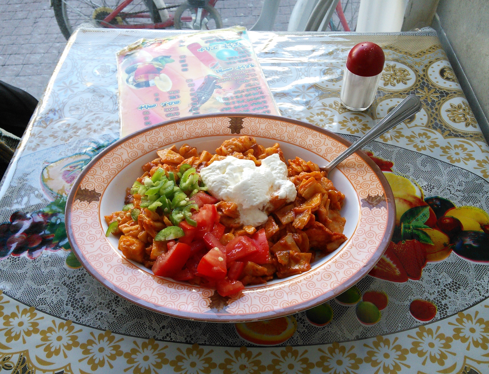

אנג'רה (באמהרית: እንጀራ, בתגרית: ጣይታ, "טייתה") היא לחם שטוח, עגול וגדול העשוי מטף שהותסס, טעמה חמצמץ ומרקמה ספוגי (מזכירה במרקמה את לחם הלחוח). האנג'רה נפוצה בקרב העמים החבשים ומהווה חלק חשוב במטבח האתיופי, הסומלי והאריתראי.
חומרים
באופן מסורתי, החומרים המשמשים להכנת האנג'רה הם מים וטף. הטף הוא דגן עגול, זעיר בגודלו, עשיר בברזל ואינו מכיל גלוטן. לפיכך, הטף איננו מתאים להכנת לחם המצריך תפיחה מרובה. הטף גדל באזורים מוגבהים בעלי כמות גשם מספקת. בשל אזורי הגידול המוגבלים שלו ותלותה הכמעט מוחלטת של החקלאות האתיופית בגשם, מחירו יקר יחסית לדגנים אחרים. לכן, ברוב משקי הבית החקלאיים באתיופיה אשר מגדלים את גרגרי התבואה שלהם בעצמם, קמחי החיטה, השעורה, התירס והאורז (כשזה בנמצא) יכולים לשמש כתחליף לחלק או לכל כמות הטף באנג'רה. ישנם מספר סוגי אנג'רה באתיופיה המסווגים על פי סוג הטף שמשמש להכנתם, בהם: "נֵאצ'" (לבן), "קאי" (אדום), "טקור" (שחור).שיטת ההכנה
לאחר ערבוב המים והטף לכדי עיסה, מאפשרים לעיסה לתסוס במשך מספר ימים, בדומה לתהליך הנעשה במחמצת שאור. כתוצאה מתהליך התסיסה לאנג'רה נוסף טעם חמצמץ עדין. לאחר מכן מגיע שלב האפייה בו מוזגים את העיסה בצורה מעגלית שנסגרת אל תוך עצמה [כבמעין ספירלה] אל תנור חשמלי או צלחת חימר - מחבת (אמהרית: מטאד/מגוגו) המונחת על האש בו האנג'רה נאפת ומקבלת את שקעיה (אשר מכונים באמהרית עיניים).בשונה מבצקי שמרים אחרים, הבצק נוזלי מספיק על מנת שאפשר יהיה לשפוך אותו אל משטח האפייה. חלקה התחתון של האנג'רה שנוגע בשטח המחומם נותר בעל מרקם חלק יחסית. ואילו חלקה העליון הופך לנקבובי ואוורירי, דבר המאפשר לה להוות משטח טוב יותר לאיסוף רטבים ומנות אוכל שונות. מבחינת המראה ואופן ההכנה, האנג'רה דומה ללחוח התימני, והיא מהווה שריד תרבותי המראה על הקשר ההיסטורי בין המדינות (ראו: שבא, סבא וד'מאט). ההבדל הבולט בין השתיים הוא השימוש בקמח טף במקום קמח חיטה.
האנג'רה נחשבת כבעלת תכונות תזונתיות חיוביות, והיא מכילה ערכים גבוהים של חומצות אמינו, ברזל, סידן ועוד.
צריכת האנג'רה
טעמה של האנג'רה הוא חמצמץ וכמעט תמיד יתווספו לה נזידים שונים הנקראים באמהרית וואט. האנג'רה משמשת כבסיס עליו מניחים את הנזידים, והסלטים. כמו כן קיימים מאכלים (כגון: אנג'רה פירפיר, אנג'רה פטפט) העשויים מאנג'רה קרועה לחתיכות וספוגה ברטבים שונים. כמו את התבשילים, גם את האנג'רה הספוגה בטעמי המזונות שהונחו עליה, אוכלים. כך האנג'רה הופכת גם למזון שאוכלים, גם ל"סכו"ם" איתו אוכלים את ה"ווׂאט" וגם ל"צלחת" עליה האוכל מוגש, שנאכלת בסיומו.בסעודה משותפת, לרוב יחלקו הסועדים את האנג'רה על צלחת אחת גדולה ולעתים אף יאכילו אחד את השני ב"ביסים" של אנג'רה (הנקראים באמהרית גוּרְשָׁה), כסימן לחיבה, כבוד ואהבה. כך למשל, אב הבית יאכיל בידו את כל יושבי ביתו או זוג נאהבים יאכיל אחד את השני. למרות שאכילת האנג'רה בעזרת הידיים יכולה להראות למתבונן המערבי כחסרת נימוס, כללי הנימוס של האכילה מוגדרים. בעזרת יד ימין, נהוג לקרוע או לבצוע חתיכות קטנות של אנג'רה ולכרוך בהם תבשילים וסלטים, אין ללקק את האצבעות כי כאמור סועדים מאותה הצלחת וכאשר מאכילים "גורשה" אין לגעת בפיו של הסועד. אכילת אנג'רה בצורה מכובדת הינה יכולת נרכשת, בדומה לאכילה במקלות סיניים
שימוש בהווה
באתיופיה ובאריתריאה האנג'רה נצרכת על בסיס יומיומי, למעשה כמעט בכל בתי האב. היא דורשת זמן רב ומשאבים להכנתה. האנג'רה נאפת בתהליך המייצר כמות גדולה של עשן שעלול להיות מסוכן עבור ילדים. בשל שיטת הבישול הזו, רבים ממשאבי הדלק באזור, הדל במשאבים, מבוזבזים. עם זאת בשנת 2003 קבוצת מחקר קיבלה את פרס אשדן[1] עבור תכנון תנור חדש עבור האנג'רה[2]. התנור משתמש במקורות זמינים כמו גללי חיות ולכן חוסך בצורך בדלק.מחוץ לרמה האתיופית ניתן למצוא את האנג'רה בחנויות מכולת ומסעדות ברחבי העולם המתמחות באוכל אריתראי, אתיופי וסומלי.
תגובות (פרסמו 1 תגובות)
מירי
הוסף את תגובתך (לחץ אנטר לפירסום)